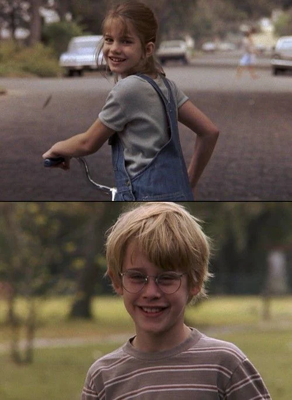

Drama, Comedy, Coming-of-Age
1991
102 minutes
Howard Zieff
My Girl follows 11-year-old Vada Sultenfuss, an imaginative girl growing up in the early 1970s as she navigates first love, family changes, and the challenges of childhood. Alongside her best friend Thomas J., Vada learns valuable lessons about friendship, loss, and growing up.